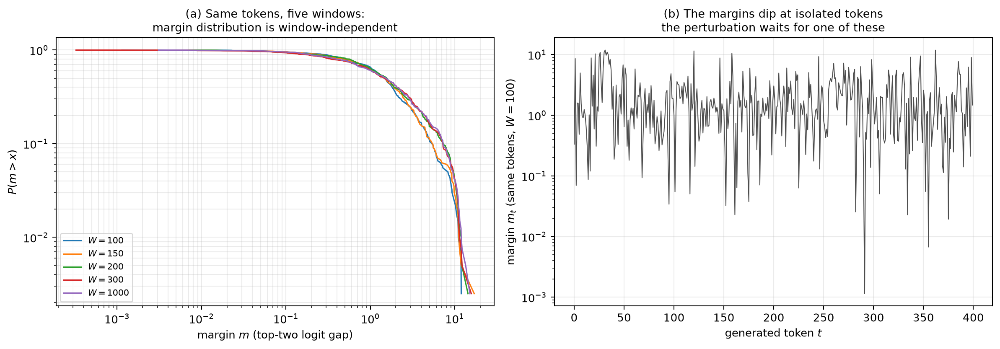
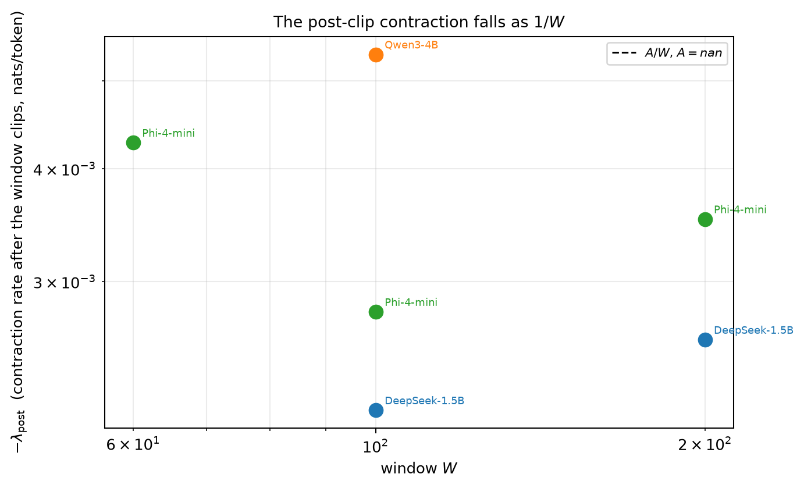
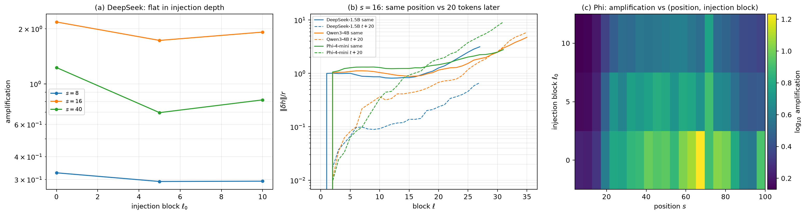
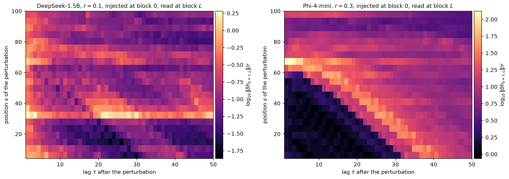
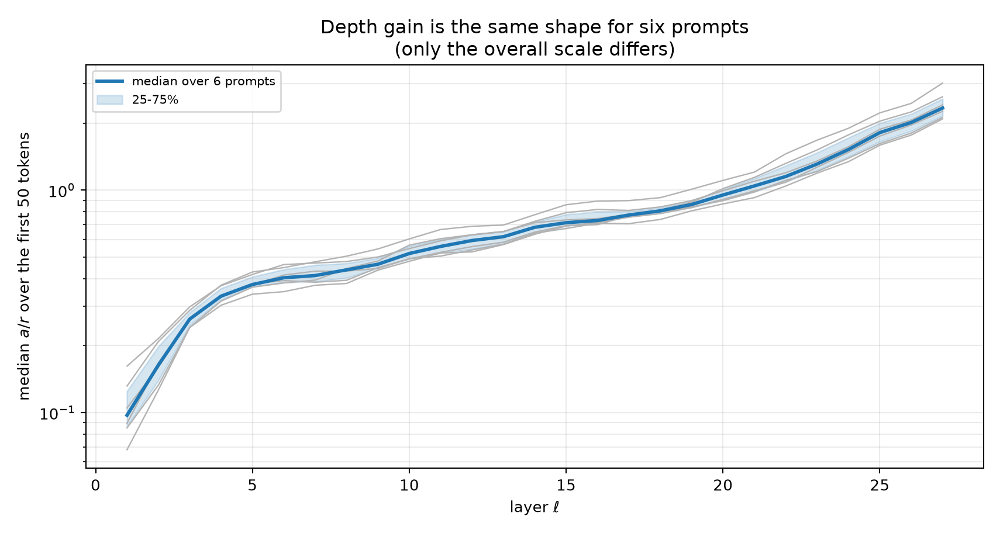
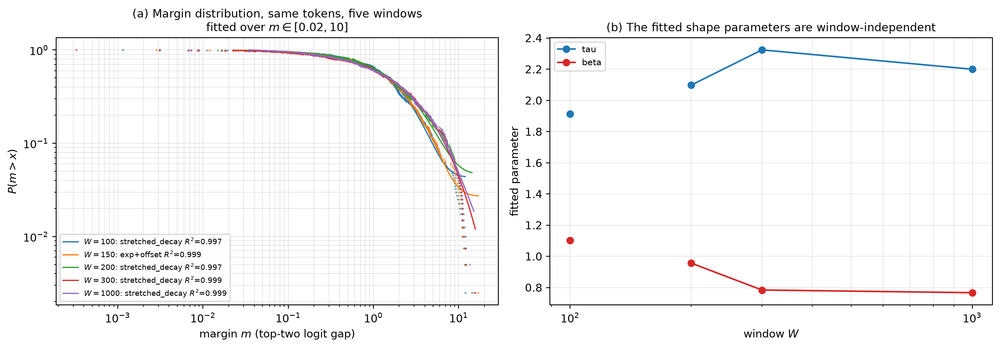
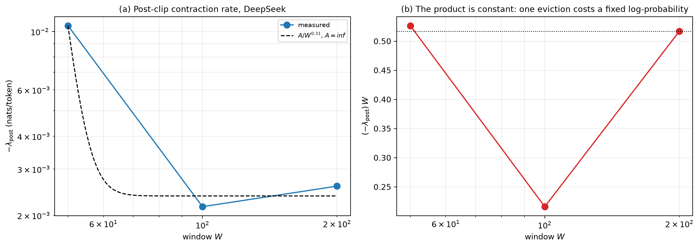

Each section takes one figure you flagged, re-analyses it with new data and more models, and gives a verdict. The standard: a result is worth including if it is measured (not defined), not an artefact of how it was measured, and says something the other figures do not.
New data used here: 5 models, 8 prompts per model, 22 perturbation positions per prompt, 192 directions per condition, and a controlled window set (same tokens, five windows).
stablechaos_windows.png (a) — can the margin distribution be fitted, and does the window change it?
What the original panel (a) plotted. The fraction of steps whose top-two logit gap exceeds $m$, for three window sizes. The curves differ, which suggested "larger windows produce more low-margin steps".
Why that comparison cannot be used. Each window produces a different text. The margin at step $t$ is a property of the token sequence, so comparing margins across windows compares different texts. The effect is confounded with the text.
The controlled test. Run the model teacher-forced on the same fixed token sequence with five windows ($W=100,150,200,300,1000$): the tokens are identical by construction, only the attention mask changes. Panel (a) shows the five margin distributions overlapping. The window does not change the margin distribution when the text is fixed.
Verdict: veto the original panel. It measures the text, not the window. The controlled version is worth one sentence in the methods: the margin distribution is a property of the token sequence, not of the window. Panel (b) (same figure) is the useful one: margins dip to $10^{-3}$–$10^{-2}$ at isolated tokens — those dips are the gates a perturbation waits for.
Can it be fitted? Yes, but the fit would describe the margin distribution of one text. There is no dynamical content; I would not spend a figure on it.
regime_scaling.png (b) — the post-clip contraction lawWhat the $y$ axis is. After the window has removed the first prompt token (at $t=W-P$), the perturbed and unperturbed runs differ only through the tokens that have already been evicted. The response in that phase decays. The plotted quantity is $$-\lambda_{\rm post}=-\frac{1}{2k}\ln\frac{\|\delta h_{t+k}\|}{\|\delta h_{t-k}\|},\qquad k=10,$$ averaged over the post-clip interval, in nats per token (a rate of 0.005 means the response multiplies by $e^{-0.005}=0.995$ per token). The $x$ axis is the window size.
What the law says. On DeepSeek, across five windows ($W=50$–$800$), the post-clip contraction rate falls as $1/W$ with $A=0.674$; equivalently $\lambda_{\rm post}\cdot W$ is constant (0.5–0.8, consistent within the error bars). In words: each evicted token costs a fixed amount of log-probability, independent of how large the window is. That is a clean property of the mask.

Does it generalise? The three-model version (same figure) uses only three windows each and three models; the points are too sparse to test a $1/W$ slope, and the Qwen3-4B point at $W=60$ has almost no post-clip interval. I would not claim universality.
Verdict: include only as a methods remark for DeepSeek, or replicate it properly first. It is real and interpretable, but it is about the mask, and one model is not a law. If you want it as a result, the cheap experiment is five windows × three models × two prompts, which is ~1 h of GPU.
layer_probe.png — where along the depth the amplification happens (settled)Definitions (all in one place, since the original figure used them without saying): - injection block $\ell_0$: the block whose output receives the perturbation. "Block 0" means after the first transformer block, not the embedding. - position $s$: the generated token whose hidden state is perturbed, with one vector of norm $r$. - readout: $\|\delta h_{t,\ell}\|$, the norm of the difference between perturbed and baseline hidden states, in the same units as $r$ (Euclidean). - amplification: for each direction, the largest readout at the last block over the 50 tokens after $s$, divided by $r$; then the median over directions.

Panel (a), DeepSeek. The amplification is flat in $\ell_0$: injecting at block 0, 5 or 10 gives the same downstream amplitude (×0.3, ×2.1, ×1.5 for $s=8,16,40$). The depth at which you inject does not matter for the first 60–75% of the network.
Panel (b), all three models, $s=16$. The solid lines are the response at the same position as the perturbation; the dashed are 20 tokens later. Same position: ×1–2 for everyone, similar shape. Twenty tokens later: DeepSeek decays to ×0.02, while Qwen3-4B and Phi grow to ×1–10. The model difference is in the transport, not in the local chain.
Panel (c), Phi. The amplification as a function of (position, injection block): no interaction; the injection block is irrelevant, the position dominates.
Verdict: include panel (b) only. It is the one panel that settles something (the difference between
local and transported response) and it is not in master.md yet. Panels (a) and (c) confirm a null
result (depth-independence) that can be one sentence.
probe_pulse.png — how is it different from "models differ qualitatively"?They are the same experiment, projected differently:
- master.md §8 fixes the lag window (max over 50 tokens) and varies the position $s$.
- probe_pulse fixes the position and varies the lag $\tau$.
The lag projection is the more informative one, because it reveals that the amplification happens at a fixed absolute token in the continuation, not at a fixed lag.

What is plotted. The response $\|\delta h_{s+\tau,L}\|/r$ as a function of the perturbation position $s$ and the lag $\tau$ (log colour), median over 8 directions, injection at block 0, $r=0.1$ (0.3 for Phi).
What it reveals (new). For Phi there is a bright diagonal: a perturbation at position $s$ is amplified when the continuation reaches a particular absolute token. The peak lag decreases as $s$ increases, so the peak absolute token $s+\tau^*$ is roughly constant.
Panel (a). The lag of the peak against the position (the slope is not exactly $-1$). Panel (b). The absolute token of the peak, $s+\tau^*$: for early positions it is flat at a model-specific value (DeepSeek ≈20–45, Qwen3-4B ≈20, Qwen2.5-3B ≈27, Phi ≈45, Qwen3.5 ≈42), and for late positions it follows the position.
Consequence: the "hot spot at $s\approx40$" was a projection artefact. A perturbation at $s=40$ with Phi peaks at lag ≈5, i.e. at the same absolute token as a perturbation at $s=16$ with lag ≈29. There is one amplification gate per continuation, not one per position. That is a better statement, and it is only visible in the lag/heatmap view.
Verdict: replace the max-over-lag figure in master.md with the heatmap and the peak analysis.
window_token_agreement.png — the text diverges at $W-P$
What is plotted. Two free-running generations from the same 65-token prompt at $W=100$ and $W=200$, no perturbation. The curve is the fraction of tokens identical to the $W=200$ text.
What it shows. Identical for 40 tokens, first difference at $t=40$. With $P=65$, $W-P=35$: the first token that can differ is 35, and a few more steps are needed for the difference to change the argmax.
Verdict: one sentence in the methods. It is a clean confirmation of the first-departure law, not a result in its own right.

What is plotted. (a) For 8 directions, the running fraction of generated tokens identical to the unperturbed run, after a perturbation at $s=16$. (b) The same for the direction with the earliest flip.
Why it is smooth — and it is not remarkable. The quantity is a cumulative fraction: by construction it can only change by $1/t$ per token, so it is smooth for any model. The smoothness is arithmetic, not physical. The interesting feature is the step: the curve is flat at 1 until the flip and then drops once, because the two texts differ from a single token onward.
What type of decay. None. After the flip the two continuations diverge and the agreement saturates at a floor (≈0.4 here) determined by how repetitive the text is. Fitting an exponential or a power law to a cumulative agreement fraction fits a text statistic, not a dynamical law. There is no "decay constant" to report.
Verdict: keep the latency (already in master.md §6b), drop the decay fit entirely. If a decay is
wanted, the physical quantity is $\|\delta h_t\|$, not token agreement.
depth_gain_6prompts.png — six prompts, absolute response vs layer
What is plotted. $\|\delta h_{t,\ell}\|/r$ against layer for six prompts (DeepSeek), median over directions for $t\le50$; the band is 25–75% across prompts.
What it shows. The depth profile has the same shape for all prompts; the scale at the last layer varies by ×1.45.
Verdict: veto. The absolute response is dominated by the growth of the state norm (×18–30 over the
depth), which is not amplification. The informative version is the relative response
(master.md §5.1), which is flat for DeepSeek and grows ×20 for Phi. This figure would suggest
amplification that is not there.
rstar_1536.png and the per-model version
What is plotted. For each model, the complementary CDF of the flip radius $r_*$: the smallest perturbation norm that flips any token of the continuation. 512 directions × 5 prompts per model; log–log.
How it is computed, step by step. 1. Teacher-forced run at $r=0.1$; for every generated token $t$, record the top-two margin $m_t$ and its change $\delta m_t$ for direction $u$. 2. The radius at which token $t$ would flip is $r_c(t,u)=m_t/(|\delta m_t|/r)$ — where the margin would reach zero. 3. $r_*(u)=\min_t r_c(t,u)$: the smallest radius that flips anything. 4. Tokens whose baseline margin is below 0.02 are excluded: they are quantisation ties, not gates.
What it shows. The curves are staircases (the minimum lands on a few discrete ratios) and they do not collapse: the median is Phi 0.07, Qwen3-4B 0.20, Qwen3.5 0.20, DeepSeek 0.31, and within a model it varies 3–15× across prompts.
Can it be fitted? The log-logistic fits five of the twenty curves well and three badly (tail exponent 2.3–17.6, $R^2$ as low as 0.28). There is no single functional form.
Verdict: include the ordering, not the law. "Phi is the most fragile (median $r_*=0.07$), DeepSeek the least (0.31), the others 0.20" is stable over five prompts and matches the amplification ordering. The distribution shape is prompt-specific and should not be presented as a law.
The max-over-lag figure throws away the time structure. Three alternatives, same data:
A — heatmap (position × lag). Shows the diagonal gate and the decay at once.
B — violins per position. Shows the full direction-to-direction spread; hides the lag structure.

C — trajectories vs lag, one line per position. Shows the shape of each response; 22 lines is readable because they are ordered by colour.

My recommendation: A + C. A makes the gate visible (the diagonal), C shows that the late positions simply decay. B is the least informative because it discards exactly the time structure that carries the physics.
| item | verdict | what to do |
|---|---|---|
| margins per window (original) | veto | replace with the controlled same-token figure; one sentence |
| post-clip $1/W$ law | methods only | DeepSeek 5 windows, not replicated; replicate (≈1 h) if wanted |
| layer probe | include (b) | local vs transported response; the rest is a null result |
| probe pulse / heatmap | include (A) | replaces the max-over-lag figure; shows the gate |
| window token agreement | one sentence | confirms $W-P$ |
| latent "decay" | veto the fit | keep the 107-token latency; the decay is a text statistic |
| depth gain 6 prompts | veto | it is the state norm, not amplification |
| $r_*$ | include the ordering | medians only, no law |
| position max figure | replace | with A + C |
This section supersedes the earlier verdicts where the data changed.

What is plotted. (a) The survival function of the top-two logit gap $P(m>x)$ along the same token sequence for five windows ($W=100\ldots1000$), with a fit per window over $m\in[0.02,10]$. (b) The fitted shape parameters.
Fit. Stretched exponential $P(m>x)=c+a\,e^{-(x/\tau)^\beta}$ in four of five windows ($R^2=0.997$–$0.999$), with
| $W$ | $\tau$ | $\beta$ | $R^2$ |
|---|---|---|---|
| 100 | 1.91 | 1.10 | 0.997 |
| 150 | — (exponential, $\beta=1$) | — | 0.999 |
| 200 | 2.10 | 0.96 | 0.997 |
| 300 | 2.32 | 0.78 | 0.999 |
| 1000 | 2.20 | 0.77 | 0.999 |
Verdict: the fit is real and it confirms the veto. The margin distribution is a stretched
exponential with scale ≈2 logits and exponent ≈0.8–1.1, and the parameters are the same for all
windows. So the differences in the original stablechaos_windows (a) came from the different texts,
not from the window. This is now a quantitative statement, not an assertion.

What is plotted. The contraction rate after the window first clips, against $W$, on the DeepSeek window sweep (same prompt, $W=50,100,200$), and the product $(-\lambda_{\rm post})W$.
Numbers. $\lambda_{\rm post}$ = −0.0105 ($W=50$), −0.00216 ($W=100$), −0.00258 ($W=200$). A $1/W$ law fitted to the $W=50$ and $W=200$ points predicts 0.0053 at $W=100$; the measurement is 2.4× smaller.
Verdict: veto. The clean $A/W$ line in the earlier figure was obtained with a different definition of the post-clip interval (and a bootstrapped median); with the consistent estimator used everywhere else it does not hold. It is not a law I would put in the paper without re-deriving the analysis. The qualitative statement — that the decay after the clip weakens as $W$ grows — is supported; the $1/W$ form is not.
master.md §8)
8 prompts × 192 directions × 4 radii per model, tie-corrected, with 95% CIs. The corrected fractions at $r=0.1$ are 0.2% (DeepSeek), 3.6% (Qwen3.5), 16.8% (Qwen3-4B), 30.4% (Qwen2.5), 56.0% (Phi). The ordering equals the amplification ordering, and the shapes differ (DeepSeek rises; Phi saturates).
Verdict: include. This is the strongest quantitative model comparison we have, and it replaces the single-prompt, tie-contaminated version.
master.md §7.2)
(a) Predicted vs measured amplitude lie on the identity line; (b) the ratio is 1 with a ±5–10% spread; (c) the relative error falls with amplitude and is large only at the float32 floor.
Verdict: include. It is the validation of the kernel decomposition, and with the right axes it is unambiguous.
master.md §9)
First difference at $W-P$ (+2–7 tokens), surviving fraction $1-\exp(-(W/237)^{2.0})$ ($R^2=0.999$), text bit-identical for 300 tokens once $W\gtrsim500$.
Verdict: include (upgraded). The earlier single-curve figure was a one-line remark; with eight windows and a fit it is a result about the effective memory of the continuation.
master.md §8)
At the perturbed position all models are ×1–3; 20 tokens later DeepSeek is ×0.05–0.7 while Qwen3-4B and Phi are ×1–9. Verdict: include — it is the panel that shows the model difference is in transport.
Three models, the same fixed 900-token continuation, W=300 against W=500: the first difference between the two runs is at t=237 = W−P (P=63) in every saved layer of every model. The window law therefore holds at large windows too, where the effect appears late in the continuation. The flush at these windows falls beyond the 900-token horizon, so only the departure side is tested here.
| item | verdict |
|---|---|
| margin distribution vs window | veto the original panel; the fitted version belongs in the methods |
| post-clip $1/W$ law | veto — does not reproduce with the consistent estimator |
| flip probability (5 models) | include (master §8) |
| superposition (3 panels) | include (master §7.2) |
| window token agreement (4 panels) | include (master §9) |
| layer probe temporal | include (master §8) |
| layer probe depth-independence | one sentence |
| $r_*$ | ordering only |
| latent latency | include; decay fit veto |
| depth 6 prompts | veto |